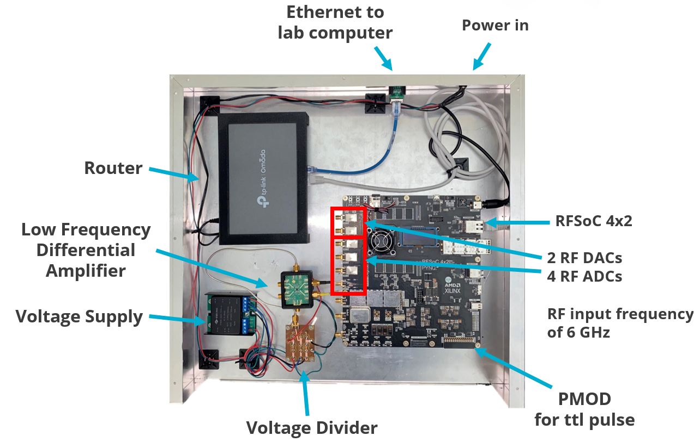

Hardware Setup
In this document we outline the hardware setup for an all-in-one RFSoC4x2 enclosure. We show:
Enclosure Overview
a. Components list
Enclosure Modification
a. Drill Holes
b. 3D Printed Cages
c. Low-Frequency Differential Amplifier
d. BNC to PMOD TTL
Assembly
a. Power
b. Securing the RFSoC4x2
c. Securing 3D printed cages
d. Front Panel Assembly
e. Input Signal Assembly
f. Router and Ethernet Connection
1. Enclosure Overview

1a. Components
Low-Frequency Differential Amplifier Texas Instruments LMH5401EVM
3D printed Router Cage
3D printed Low-Frequency Differential Amplifier Holder
PMOD Connectors
parts_all.xlsx lists the source, quantity, and cost for hardware modification components. parts_digikey.xlsx can be uploaded directly into the Digikey shopping cart for easy purchase of Digikey items.
2. Enclosure Modification
2a. Drilling Holes
Drill holes are made in the main body of the CH-14404 enclosure to secure 3D printed cages, the RFSoC4x2, an ethernet pass-through, and a power pass-through. Drill holes are also made in the front panel of the CH-144-4 enclosure for 6 SMA pass-throughs and 8 BNC pass-throughs. The schematic below shows the position and purpose of each drill hole. Enclosure_Main.STEP and Enclosure_Front.STEP give the exact size and position of each drill hole (found in the hardware folder).


2b. 3D Printed Cages
The router and low-frequency differential amplifier are secured in the enclosure using 3D printed cages. It is especially important to immobilize the low-frequency differential amplifier since the wires and solder for the RFSoC4x2 to low-frequency differential amplifier connection are very delicate.
The 3D printed low-frequency differential amplifier holder is made of Low_Freq_Diff_Amp_Base.STEP and Low_Freq_Diff_Amp_Top.STEP in the main hardware folder. Print these parts at 0.16mm tolerance. The low-frequency differential amplifier sits in the 3D printed base with the loops for V+, V-, and ground pointing down. The 3D printed top should be snug over the top of the 3D printed base. In a later step, the 3D printed low-frequency differential amplifier holder will be secured to the enclosure base with screws.
Router_Holder.STEP is the CAD part for the router holder and is found in the main hardware folder. Printing tolerance of 0.2mm is adequate for the router holder. The holder sits over the router and is held in place by screws from the underside of the enclosure into the part’s legs.

2c. Low-Frequency Differential Amplifier
to bypass the high-pass filter inherent to the analog to digital converters (ADCs) on the RFSOC4x2. Recall from the installation readme that the balun and capacitors on the analog-to-digital converters (ADCs) act as a high-pass filter, which filters our the low-frequency experimental defect data. The balun and capacitor need to be removed from one ADC to read in experiment data. Additionally, a low-frequency differential amplifier is required to process the low-frequency signal input after the balun has been removed. Follow step 1a in the installation readme to remove or bypass the balun and capacitors for one of the ADCs if not yet done. Now follow the modified step 1b to connect the low-frequency differential amplifier with the 3D printed holder for the low-frequency differential amplifier.
Modified Installation Readme 1b.
Connect the low-frequency differential amplifier

Texas Instruments LMH5401EVM low-frequency differential amplifier schematic with bias voltage for the RFSoC4x2
To connect the low-frequency differential amplifier to the RFSoC4x2,
solder a 3.3 V input wire to the red V+ post on the low-frequency differential amplifier
solder a -1.8 V input wire to the yellow V- post on the low-frequency differential amplifier
solder a ground wire to either the TPG1 or TPG2 post on the low-frequency amplifier
screw a 0.7 V SMA wire to the Vcm (V common) SMA head on the top of the low-frequency differential amplifier
MODIFIED - with the posts facing down, feed the soldered V+, V-, and ground wires through the base of the low-frequency differential amplifier 3D printed holder, and push the low-frequency differential amplifier down so that it is snug in the basecut a semi-flexible SMA cable in half and strip the insulation off of both ends to expose the center conductor
screw the SMA heads of the cut SMA cable to Vp and Vm SMA heads on the low-frequency differential amplifier–screwing on the SMA cables now will limit the torsion on our delicate soldering in the next steps
take the SMA cables attached to the low-frequency differential amplifier and solder them to the RFSoC4x2
Vp should be solder to the top right solder pad
Vm should be soldered to the middle right solder pad
The image below is the circuit diagram for the RFSoC4x2. The top right solder pad–the pad for Vp–is labeled 6. The middle right solder pad–the pad for Vm–is labeled 5
(Top Left) 6 contact pads underneath the balun (Bottom Left) Vm input soldered to pad 5 and Vp input soldered to pad 6 (Right) Inputs from low-frequency differential amplifier soldered to RFSoC4x2 ADC D
Note that you can instead leave the balun in place and directly solder coax cables to the capacitor terminals, however, this is more difficult and it is easy to destroy the capacitor terminals with the solder iron.
2d. BNC to PMOD TTL
To use the PMOD to control a laser with digital TTLs we need to connect the PMOD to BNC on the front panel of the enclosure. To do so,
select a BNC pass-through to be inserted to the front panel
take a PMOD male to male connector and cut off one end
strip the insulation from the cut end of the PMOD connector
solder the exposed PMOD connector wire to the cup of the BNC connector
secure the BNC pass-through to the enclosure front panel using the provided washer and nut
the remaining PMOD connector male end can be plugged into the RFSoC4x2 PMOD

BNC to TTl connection in the RFSoC4x2 enclosure

Schematic for soldering PMOD cable to BNC head. Single ended male PMOD soldered to BNC cup.
3. Assembling the Components
3a. Power
A single power source is plugged into the power pass-through in the back of the enclosure and pig-tail power splitters are used to power the RFSoC4x2, router, and optional internal low-frequency differential amplifier voltage supply. The power cord supplied with the RFSoC4x2 provides more voltage than necessary thus this source can be used to power the RFSoC4x2, router, and optional internal low-frequency differential amplifier voltage supply. To create the single power plug in:
remove the hex nut and washer from the power pass-through jack (1 in schematic below)
push the power pass-through jack through drill hole G (schematic 2a above) from the outside of the enclosure to the inside
place washer back on the power pass-through jack and tighten the hex nut, the pass-through should be secured to the wall of the enclosure now
measure and trim the two or three pigtail power cords (2 in schematic below). The power cords need to reach the router power input, RFSoC4x2 power input, and optional voltage supply. Refer to schematic 2a above. to estimate distances.
solder two or three pigtails to the head of the power pass-through, connecting positive wires to the center jack and negative wires to the outer loop (3 and 4, respectively, in schematic below)

Power pass-through and pig-tail power splitting in the RFSoC4x2 enclosure. Power is split to the RFSoC4x2, router, and voltage source.
Schematic for soldering pigtail power wires to the power pass-through. 1) hex nut washer 2) pig-tail power cords 3) power pass-through center jack 4) power pass-through ground ring
3b. Securing the RFSoC4x2
Screws and hex standoff pillars are used to support and secure the RFSoC4x2 in the enclosure. To do so,
pass a screw through an edge screw hole in the RFSoC4x2 into a hex pillar placed underneath the board, repeat for each of the 8 perimeter screw holes
place the RFSoC4x2 in the enclosure in spot A (schematic 2a) with the PMODs facing the open end of the enclosure
screw 8 x 4-40 0.25” up through the bottom of the enclosure into the bottom of the 8 x 0.5” hex pillars
tighten the screws until the RFSoC4x2 is secure
3c. Securing 3D Printed Cages
To secure the 3D printed cage for the router,
place the router inside enclosure in spot B (schematic 2a above) with the ethernet ports facing the RFSoC4x2
place the 3D printed router cage on top of the router
screw 4 4-40 0.25” screws through the bottom of the enclosure into the legs of the 3D printed router cage. Tighten the screws until the router is secure
To secure the 3D printed support for the low-frequency differential amplifier,
place the low-frequency differential amplifier in the 3D printed base in the enclosure in spot E (schematic 2a above))
screw 4 4-40 0.25” screws through the bottom of the enclosure into the legs of the 3D printed low-frequency differential amplifier. Tighten the screws until the router is secure
3d. Front Panel Assembly
With the holes drilled in the CH-14404 enclosure front panel BNC and SMA pass-throughs can be secured in place. To do so,
remove the washers and nuts from 6 SMA pass-throughs and 8 BNC pass-throughs
through the front pass of the panel, place 6 SMA in the smaller left hand drill holes and 8 BNC in the right hand drill holes (schematic 2a)
from the backside of the panel put the washers and nuts back on the SMA and BNC pass-throughs and tighten to secure
The SMA and BNC pass-throughs should be secured in place on the front enclosure panel now.

Front panel of the RFSoC4x2 enclosure. Silk-screening was used to label SMA and BNC ports
3e. Input Signal Assembly
To connect the input signal to the RFSoC4x2,
screw one end of a rigid SMA cable to the inside end of a SMA pass through on the front panel
screw the other end of the rigid SMA cable to the signal in SMA head on the low-frequency differential amplifier (IN+)
Input and output connections inside the RFSoC4x2 enclosure

Schematic of input and output connections in the RFSoC4x2 enclosure
3f. Router and Ethernet Connection
To add the ethernet pass-through to the enclosure:
remove the washer from the ethernet pass-through base
push the base of the ethernet pass-through through drill hole F from the outside of the enclosure
screw the washer back on the ethernet-pass through from the inside of the enclosure
The ethernet-pass through should now be secured to the wall of the enclosure. To connect the lab control computer to the RFSoC4x2,
connect the router from the lab control computer to the ethernet pass through
connect an ethernet cord from the ethernet pass through to the router
connect an ethernet cord from the router to the RFSoC4x2
Now the lab control computer can be used to communicate with and control with RFSoC4x2.